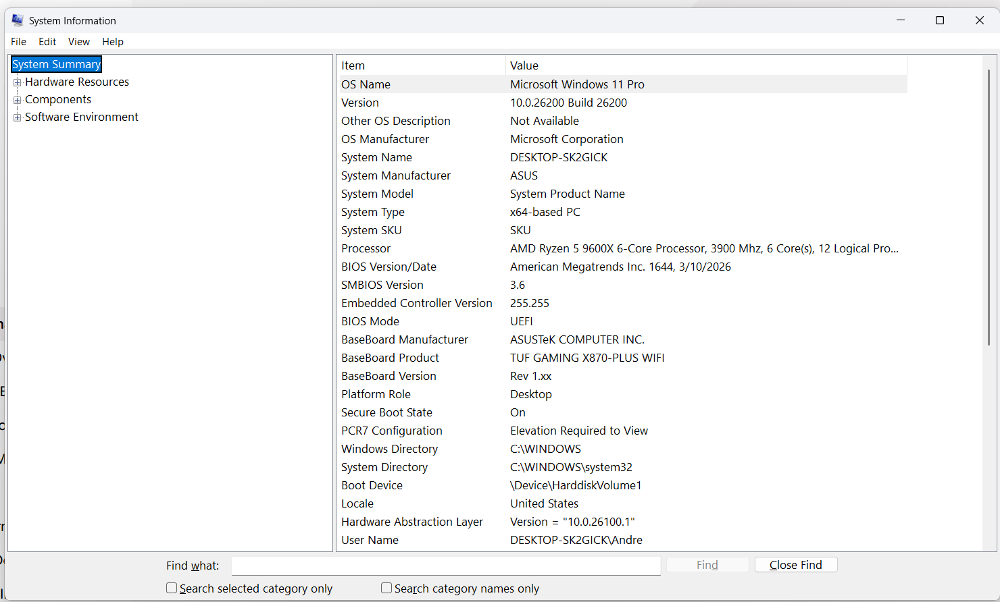
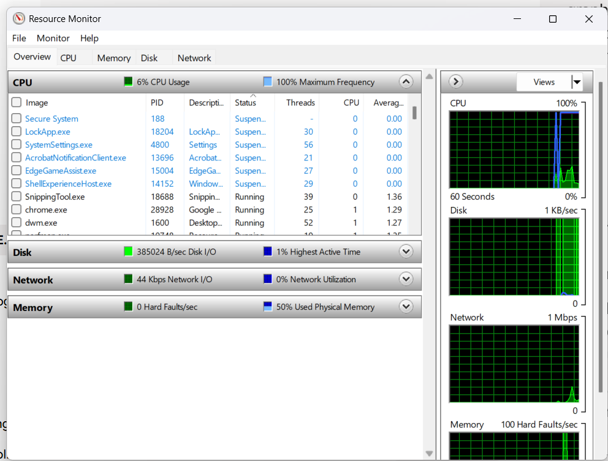
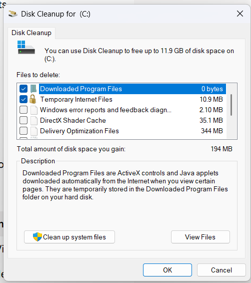
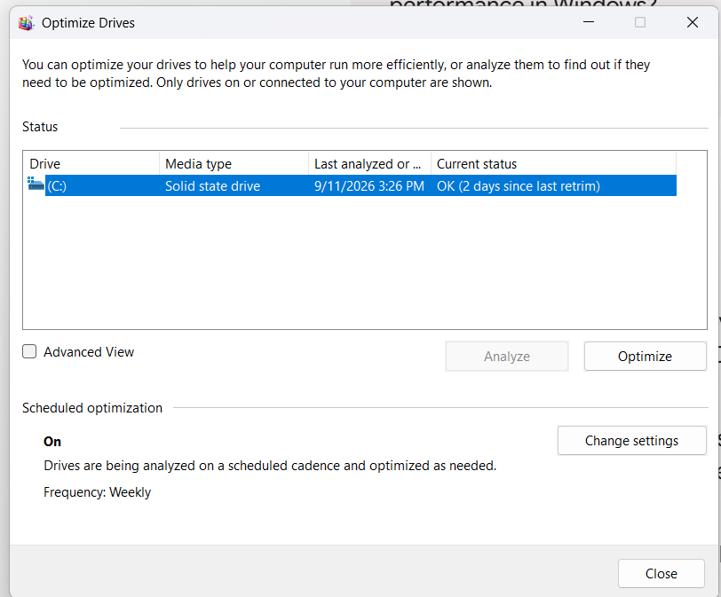
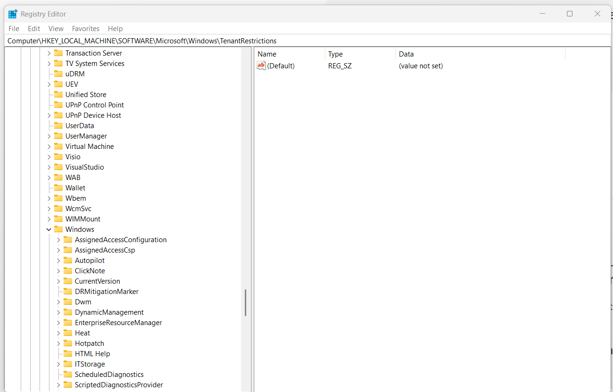

System Information
msinfo32.exeSystem Information utility that displays details about hardware resources, components, and the software environment.
1.43
System Information, Resource Monitor, System Configuration, Disk Cleanup, Defrag/Optimize, and Registry Editor.
Inventory the system and watch live resource use per process.

System Information utility that displays details about hardware resources, components, and the software environment.

Resource Monitor, providing detailed real-time graphs for CPU, Memory, Disk, and Network usage alongside per-process resource breakdowns.
Troubleshoot startup, change boot options, and manage services.

System Configuration utility used to troubleshoot system startup issues, modify boot options, and manage services.
Location within System Configuration used to select startup modes: Normal, Diagnostic, or Selective.

Location used to configure Safe Boot parameters, enable boot logging, choose default OS in multiboot setups, and set hardware resource limits (e.g., max RAM/CPUs).
Free space, optimize drives, and edit low-level Windows settings.

Disk Cleanup utility designed to reclaim storage space by removing temporary, unnecessary, and cached files.

Defragment and Optimize Drives utility used to optimize HDD storage layout and run TRIM commands on SSDs.

Registry Editor, used to view and modify Windows' hierarchical configuration database of low-level OS settings.